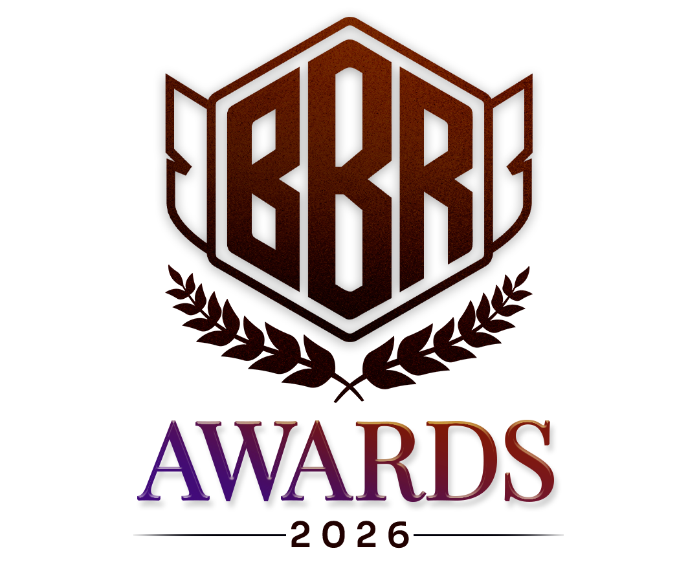

Indique seus favoritos e ajude a escolher os finalistas!
Período de indicações
As indicações acontecem de 1º a 13 de dezembro, no horário de Brasília.

Indique seus favoritos e ajude a escolher os finalistas!
As indicações acontecem de 1º a 13 de dezembro, no horário de Brasília.